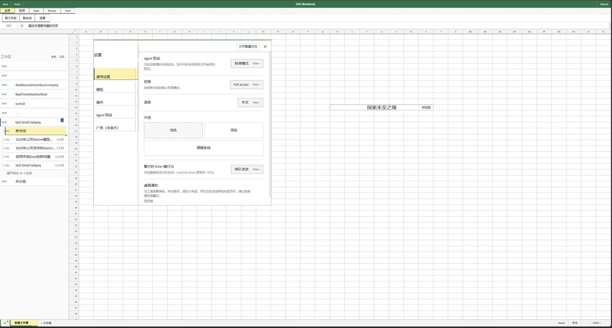
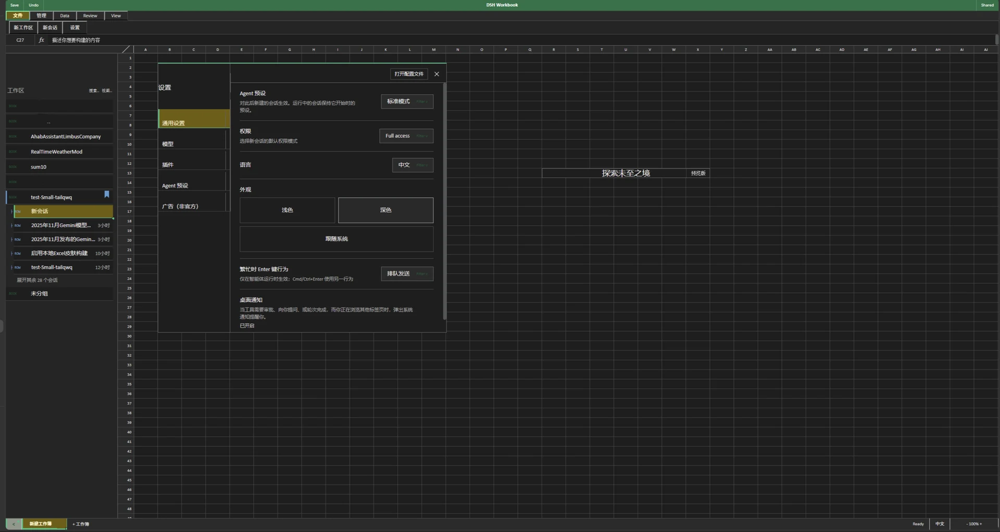

界面预览


功能特性
工作簿功能区
文件 / 会话 / 管理标签 + 工具单元格，公式栏承载输入，名称框显示选中区域
单元格化消息
对话正文按语义块映射为合并单元格；用户消息使用审阅批注样式
工作表网格
A/B/C 列 + 1/2/3 行，真实单元格矩阵与选区，滚动与行号同步
工作簿标签
底部 sheet 标签承载多会话切换，可新建 / 关闭工作簿
面板控制
状态栏「面板」「详情」按钮开合底部面板与右栏；侧栏工具、设置等原生入口全部保留可点
原生行为复用
权限 / 模型 / 思考 / Agent 预设 / 工作区复用原生入口，菜单伪装成筛选下拉
安装
在 dsh 皮肤中心选择「Deepcel 工作簿」→ 应用 → 刷新。或手动放置到皮肤目录：
mkdir -p ~/.dsh/skins/deepcel
cp skin.json skin.css patches.css hooks.mjs dsh-market.provenance.json {preview}/*.webp ~/.dsh/skins/deepcel/
curl -X POST http://127.0.0.1:3080/api/skin-center/v2/active \
-H 'content-type: application/json' -d '{"active":"deepcel"}'提示：dsh-market.provenance.json 必须一并复制——皮肤中心据此信任 hooks（否则工作簿 chrome 不渲染）。